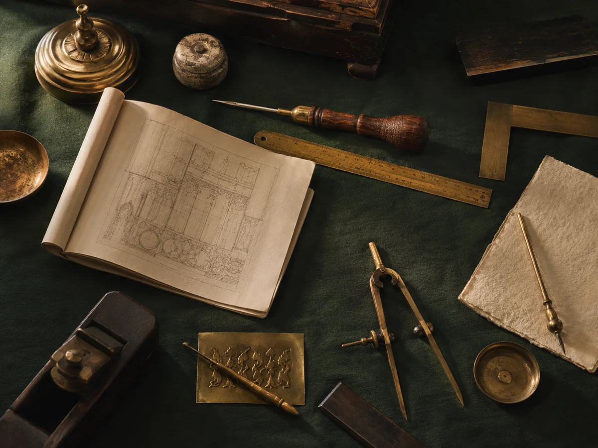

The Studio · passed on
Digital khidma for the ummah.
Websites for masajid, Islamic nonprofits, schools, and Muslim-owned businesses — built by someone who has stood at the front of the room, not by an agency learning your calendar from a briefing document.
This is the arm that earns. What it earns pays for the Qur'an classes, the apps, and the khidma rate for masajid that could not otherwise afford this.

Not a marketing agency that discovered a niche. A Muslim who builds, doing for masajid what he would want done for his own.
What a tired site costs
Your khidma changes lives. The website should carry it.
Our communities do extraordinary work — feeding neighbours, teaching Qur'an, burying the dead with dignity. Online, that work usually goes quiet. These are the four places it leaks out, and none of them announce themselves.
Slow, and built for a desktop
Most of your community arrives on a phone, standing in a car park, deciding whether to come on Friday. A site that takes six seconds has already answered them.
Giving that leaks
A donate button below the fold, three taps to a form, and a checkout that asks for a login. Every extra tap is a gift that was intended and never arrived.
Nobody knows what is working
No analytics, so no evidence — which programme people actually look for, which appeal worked, which page they leave from. Effort poured into the dark.
Locked in, and paying for it
A jumu'ah time you cannot change without an invoice, on a platform that quietly bills monthly, holding content you cannot take with you.
None of that is a design problem. It is what happens when a website is bought from someone who had to be taught what a masjid does.
Why this is different
We already know why the donate page matters most.
A generic agency has to be taught your context, and you pay for the lesson. Here is the part nobody has to explain to us.
Prayer and jumu'ah
Daily times that stay correct, a jumu'ah slot that is impossible to miss on a phone in a car park, and Ramadan timings that change without a developer.
Zakat, sadaqah, and the season
Zakat and sadaqah as separate flows, because they are. A donation page that works on the last ten nights, when most of the year's giving actually happens.
Halal-friendly, and already yours
If your giving already runs on Zeffy or LaunchGood, it stays there. We do not move your community's money to make a project tidier.
What a build includes
Everything needed to launch, and nothing you have to rent.
Every build is fixed-price and includes migration off whatever you are on now. At the end, the site is yours: the code, the domain, the logins, all of it. If you ever want to leave, you leave with the site.
- A custom responsive design in light and dark, not a theme with your logo dropped in
- Core pages: home, about, programs, events, give, contact — plus whatever your work actually needs
- Migration off your current platform, with redirects so no existing link breaks
- Donations set up on the halal-friendly platform you already trust
- Analytics, basic SEO, accessibility, and speed treated as part of the job, not extras
- An automated test suite run before launch — broken links, mobile overflow, load errors
- Training for your team, and every login handed over in writing
How it goes
Four steps, one fixed price.
- 01
A twenty-minute call
No pitch. You describe the community and what is not working; we tell you plainly whether we are the right people and roughly what it costs.
- 02
A fixed quote, in writing
Scope, price, and a date window — two, four, or six weeks. Fifty percent to begin, the balance at launch. We do not bill by the hour, and the price does not move because we were fast.
- 03
Build and migrate
Real content and real photographs, moved off the old platform, reviewed by you on a private link while it is being built, tested page by page.
- 04
Launch, then stay
Training, handover, and a care plan so that in month eight there is still someone who answers. That is the whole reason the care plan exists.
What you own
The cheapest website can be the most expensive thing you have.
Before the prices below, the part that actually decides what this costs your community over ten years. We are not going to name competitors, but these are all real arrangements a masjid can sign this week.
A percentage of every gift
Some platforms take a cut of everything your community donates. The fee grows with your community's generosity, and with nothing else.
Prayer times behind a tier
Some put the times themselves — the single most-used thing on a masjid's website — on a paid plan, and the free tier caps you at one page.
Free, on their platform
Some give the site away and host it themselves. It is genuinely free, and you never own it, cannot take it with you, and cannot leave without starting again.
The arithmetic a treasurer should do first
Rented, with a percentage
One percent of everything given, at a masjid raising $300,000 a year. It is charged for as long as the site exists, and it rises every year the community gives more.
Owned, once
Built for you and handed over — the code, the domain, every login. Care afterwards is optional, monthly, and cancelling it does not take the site with it.
Free is sometimes genuinely the right answer, and if your masjid has fifty families and no budget we will tell you which free option to use rather than sell you something. What we will not do is let you sign a percentage away without anyone having done that sum out loud.
What it costs
Published, so you can decide before you call.
Price is set on what the work is worth to your community, not on hours. We build faster than most because of how we work — that is our margin to keep, and it is why the khidma rate below is possible at all.
A website, built and migrated — one time
Khidma Sadaqah rate
For small, under-resourced masajid. The same care, at a price a community of a hundred families can carry. Offered sparingly and never advertised as a sale — the difference is sadaqah, and you should be able to see exactly how much it is.
Standard
The default and the most common: a typical masjid, Islamic school, or nonprofit. Full custom build, migration, launch, training.
Premium
Large centres, schools, and Muslim-owned businesses with more to carry — deeper content, bespoke throughout. This tier is what funds the khidma rate.
If you are a small masjid and the khidma rate is still out of reach, write to us anyway. That rate exists precisely for the conversation you are hesitating to start.
Care — monthly, and the reason we are still here in month eight
Essentials
$50 /mo
Hosting, security, backups, uptime monitoring, and routine content edits.
Care+
$100 /mo
Everything in Essentials, plus priority updates and a quarterly review together.
Growth
$200 /mo
Adds analytics reported in plain language and a monthly newsletter send to your list.
Growth & Marketing
from $300 /mo
For organisations running real campaigns: managed seasonal pushes and content help.
Add-ons, à la carte
Boosts — $250 to $1,500. One focused thing: a landing page, a donation-page tune-up, analytics and search setup, a speed or mobile repair on a site we did not build.
Ramadan-Ready — $500 to $1,500. The season that decides your year: a campaign page, a giving flow that holds up on the last ten nights, and the timings sorted before Sha'ban ends.
Terms, plainly
Fifty percent deposit to begin, balance at launch. Care plans run on auto-pay and can be cancelled — we would rather you stay because it is worth it.
Everything is quoted as a fixed price in writing before any money moves. If the scope changes, we requote in writing rather than sending a surprise.
You probably cannot decide this alone.
Almost nobody reading this page can approve it by themselves — it goes to an imam, a board, or a spouse. So here is the whole thing on one sheet: what it is, what it costs, what care covers, and what you own at the end. Written for somebody who has not met us and printed for somebody who does not read email.
Before you call
The seven things people write to ask.
Do we have to move our donations off the platform we use?
No, and we would usually argue against it. If your giving already runs somewhere your community trusts, it stays exactly where it is and we point the site at it.
Moving a donation platform mid-project makes our work tidier and your December harder. We left Al-Maun's donations alone for precisely that reason, and it is the decision on that project we would defend hardest.
Do you only work with masajid?
Masajid and Islamic nonprofits are the heart of it. We also build for Islamic schools, MSAs, and Muslim-owned businesses — and that last group matters structurally, because the full-rate work is what pays for the khidma rate above.
We are a small masjid with very little money. Is this for us?
Very likely, yes. The khidma rate exists for exactly this and it is subsidised by the larger projects rather than by cutting corners on yours.
Write even if the khidma rate still looks out of reach. Nobody here will make you explain your budget twice, and if the honest answer turns out to be a free option rather than us, you will be told that.
How long does it take?
You choose a window at the quote stage — two, four, or six weeks — and that window is what we commit to in writing.
We will not promise a site next week. Rush work is a paid exception we usually decline, because the way to hit a date reliably is to agree a sensible one rather than a heroic one.
What do you actually need from us?
Three things: your content (text, photographs, programme details), your logins for the domain and anything we are migrating, and one person who can make a decision without a six-week committee cycle.
That third one matters more than people expect. It is the single biggest difference between a four-week project and a four-month one, and it costs nothing.
If gathering content is the blocker — and it usually is — say so on the call. A care plan can carry that work rather than the project stalling on it.
How many rounds of changes do we get?
You review the site on a private link while it is being built, not in one big reveal at the end, so most changes happen while they are cheap. Two full rounds of revisions are included in every quote.
If what you want turns out to be bigger than what was scoped, we requote it in writing and you decide. Nothing gets built and billed afterwards.
What are we locked into?
Nothing. There is no proprietary platform, no page-builder licence, and no account of ours that your site depends on. It is built on standard, fast, boring technology and handed over whole.
If you sacked us the week after launch you would keep a working website, and any competent developer could pick it up. That is the test we build to.
A faster lane
MasjidBuilder, by Inheriting Islam.
Nearly every masjid needs the same handful of things done properly. Doing those well, in a standard way, is quicker and cheaper than designing them from nothing — and it is the delivery engine that makes the khidma rate possible at all.
- Prayer and jumuʿah times above the fold, with iqāmah — the times your community sets, not only the calculated adhān
- An events calendar a volunteer can actually keep up to date
- A giving page on the platform you already use
- Programmes and services — the janāzah, nikāh, zakat help and new-Muslim support people search for at the worst moment of their week
- Contact and directions that work on a phone in an unfamiliar neighbourhood
If your masjid needs something genuinely bespoke, we will say so on the call and quote the Studio instead. The fast lane is only cheaper when it actually fits.
The times are the whole thing
It is the most-used feature on any masjid website and the one most often done badly — large, well-funded masajid link to a PDF, or a printed calendar, or show nothing at all. Getting live, correct, iqāmah-aware times above the fold already beats most of what exists.
It is also the thing that must never be wrong. If times cannot be loaded, the page says so rather than showing you yesterday's.
What it is not
Not a subscription platform you rent forever. You own the site at the end exactly as you would with any other build, and the care plan is a service, not a hostage arrangement.
MasjidBuilder is getting its own front door. It will live at its own address, still run by this house and still built by the same two people. Until that is finished, this section is the whole of it and there is nowhere else to click.
The work
One client, told properly.
We would rather show you every decision in one real project than a wall of thumbnails from projects we barely touched.

Al-Maun Neighborly Needs
The humanitarian arm of Masjid As-Sabur, the oldest masjid in Las Vegas, serving the Historic Westside since 2003. Sixteen custom pages, migrated off Squarespace, donations left on the platform they already use, their own photographs throughout, and an automated test suite that runs on every change.
Read the case studyA second build is in progress. It goes here when it is signed, shipped, and the client is glad to be named — not before.
Honestly
We are a good fit if
- You are a masjid, Islamic nonprofit, school, or Muslim-owned business
- One or two people can make a decision without a six-week committee cycle
- You can get us your content and photographs, or you want the care plan to handle it
- You want to own the result, permanently
Also honestly
We are the wrong people if
- You need it live next week — we quote date windows, and rush work is a paid exception we usually decline
- You want a custom web application, a marketplace, or a mobile app — that is a different job
- You want the cheapest possible site. There are cheaper people, and they are cheaper for a reason
- You are looking for someone to run your social media. We build; we do not post
Start here
Tell us what your community needs.
Twenty minutes, no pitch, and a straight answer about whether this is worth your board's money.